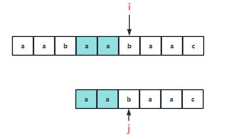
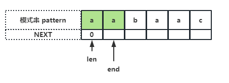

「学习」
KMP
用途：字符串匹配
举例说明
S="aabaabaac", pattern="aabaac"
预期结果：主串中存在模式串，应该返回起始下标 -3

- i 不会回头
- j 左侧的字符一定是已经经过比较的
当 S[i] == pattern[j]
i、j 均右移，继续往下比较

当 S[i] != pattern[j]
i 不动，j 以一定的模式进行转移，具体见下面的场景
j 如何移动？
（假设截取模式串 [0, j-1] 为 pattern‘）
当发现当前比较的字符不同时：
- 模式串找到 pattern’ 中最长的相同前后缀（假设为 comFix），如上图中的 B 和 C
- 那么主串在下标 i 之前也必定有一个 comFix（由于 j 前面的字符一定的经过比较的），也就是上图中的 A
所以 A = B = C，那么就可以把 j 的位置移动到 C 的下一个位置，这样就能够保证在 i 不回头的情况下，j 左边的字符都是已经经过比较的
继续往下比较

那么 KMP 的伪代码就很容易能够写出来：
获取 Next 数组
KMP 算法中 j 的转移是通过一个保存 j 转移信息的数组 next 来实现的，那么如何获得这个数组是 KMP 算法的关键
首先根据 KMP 的工作流程可知，next 中保存的其实是最长公共前后缀的长度，也可以理解为最长公共前后缀中前缀的下一个下标
next 保存了什么？
next[i] 保存了 pattern[0,i] 这个字符串最长公共前后缀的长度
举个例子说明：pattern = "aabaac"

最长相等前后缀长度：
| 子串 | 最长公共前后缀 | next |
|---|---|---|
| a | 无(长度为1没有前缀与后缀) | 0 |
| aa | a | 1 |
| aab | 无 | 0 |
| aaba | a | 1 |
| aabaa | aa | 2 |
| aabaac | 无 | 0 |
如何在 O(M) 的时间复杂度内获得这个 next 数组？ 使用两个指针，从头开始遍历 pattern： - len：记录了最长公共前后缀的长度（初始 0） - cur：子串结尾（初始 1）
首先初始化 next[0] = 0，所有的模式串都符合

判断 pattern[cur] == pattern[len]
说明存在相同前后缀，那么将 len++，next[cur] = len（说明子串 pattern[0, cur] 的最长公共前缀长度为 len） 再将 cur++，继续判断下一个子串
当 pattern[cur] != pattern[len]
说明当前的子串是不存在公共前后缀的，那么将 len 重置 len = next[len-1]（找子串[0, len-1]的最大相同前后缀，直到首字符的位置 或者 pattern[len] == pattern[cur]）， end 继续右移动
注意
这个步骤往往是容易出错的，看下面的一个例子


重复前面过程，直到获取整个 next 数组
一个错误代码实现
正确实现：
func getNext(pat string) []int {
n := len(pat)
next := make([]int, n)
for l, cur := 0, 1; cur < n; cur ++ {
// 不相等需要根据前面得到的 next，更新 l
// 直到相等或者 l == 0
for l > 0 && pat[l] != pat[cur] {l = next[l-1]}
if pat[cur] == pat[l] {
l++
}
next[cur] = l
}
return next
}
整体代码
func KMP(s, pat string) int {
n, m := len(s), len(pat)
next := getNext(pat)
i, j := 0, 0
for i < n && j < m {
for j > 0 && pat[j] != s[i] {j = next[j-1]}
if s[i] == pat[j] {
j++
}
i++
}
if j == m {
return i - m
} else {
return -1
}
}
func getNext(pat string) []int {
n := len(pat)
next := make([]int, n)
for l, cur := 0, 1; cur < n; cur ++ {
// 不想等需要根据前面得到的 next，更新 l
// 直到相等或者 l == 0
for l > 0 && pat[l] != pat[cur] {l = next[l-1]}
if pat[cur] == pat[l] {
l++
}
next[cur] = l
}
return next
}
排序
常见排序
归并
// 1. 定义方法：将左右两个已经有序的序列合并成一个序列（原问题得解：原数组有序）
// 2. 子问题：左右的数组需要有序，与原问题解决方法相同
// 3. 结束条件：数组的长度为 1
func mergeSort(nums []int) []int {
// 结束条件
if len(nums) <= 1 {
return nums
}
// 子问题关系
mid := len(nums) / 2
left := mergeSort(nums[:mid])
right := mergeSort(nums[mid:])
// 方法定义
return merge(left, right)
}
// 将两个有序数组合并
func merge(nums1, nums2 []int) []int {
n1, n2 := len(nums1), len(nums2)
nums := make([]int, n1 + n2)
i, j, idx := 0, 0, 0
for i < n1 && j < n2 {
if nums1[i] < nums2[j] {
nums[idx] = nums1[i]
i++
} else {
nums[idx] = nums2[j]
j++
}
idx++
}
for ; i < n1; i++ {
nums[idx] = nums1[i]
idx++
}
for ; j < n2; j++ {
nums[idx] = nums2[j]
idx++
}
return nums
}
冒泡
func bubbleSort(nums []int) {
if len(nums) <= 1 {
return
}
for j := len(nums)-1; j >= 1; j--{
for i := 0; i < j; i++ {
if nums[i] > nums[i+1] {
swap(&nums[i], &nums[i+1])
}
}
}
}
插入
选择
快排
// nums 数组排序
func quickSort(nums []int, start, end int) {
// 结束条件
if start >= end {
return
}
// 子问题关系
pivot := partition(nums, start, end)
quickSort(nums, start, pivot)
quickSort(nums, pivot+1, end)
return
}
func partition(nums []int, start, end int) int {
if start == end {
}
pivot := start
idx := start + 1
for i := start+1; i <= end; i++ {
if nums[i] < nums[pivot] {
swap(&nums[i], &nums[idx])
idx++
}
}
swap(&nums[pivot], &nums[idx-1])
return idx-1
}
字典序
用途：全排列、返回基于字典序的下一个序列等
四步：
-
找上坡
-
找对大且最小
-
交换
-
倒序
func nextDicArr(nums []int) []int {
if len(nums) <= 1 {
return
}
pos := -1
for i := len(nums)-2; i >= 0; i-- {
if nums[i] < nums[i+1] {
pos = i
break
}
}
// 没找到上坡（左值小于右值），说明已经是降序排列
if pos == -1 {
for i,n := 0,len(nums); i < n/2; i++ {
nums[i], nums[n-i-1] = nums[n-i-1], nums[i]
}
return nums
}
// 找到 pos，接着找右边大于该值的最小值（也就是第一个大于标记的值）
biggerThanPos := -1
for i := len(nums)-1; i >= pos+1; i-- {
if nums[i] > nums[pos] {
biggerThanPos = i
break
}
}
nums[pos], nums[biggerThanPos] = nums[biggerThanPos], nums[pos]
// 剩下的倒序
for i,n,cnt := pos+1, len(nums),0; i < (n + pos+1)/2; i++ {
nums[i], nums[n-cnt-1] = nums[n-cnt-1], nums[i]
cnt++
}
return nums
}